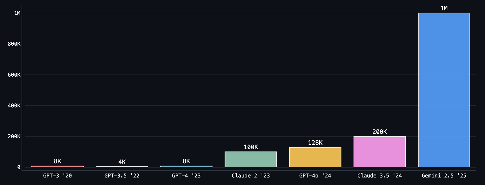

Why Cline Doesn't Index Your Codebase (And Why That's a Good Thing)
Here's a common question we get from prospective Cline users: "How does Cline handle large codebases? Do you use RAG to index everything?" It's a reasonable question. Retrieval Augmented Generation (RAG) has become the go-to solution for giving AI systems access to large knowledge bases. But for Cline, we've taken a deliberately different path. We don't index your codebase, and this choice isn't an oversight, it's a fundamental design decision that delivers better code quality, stronger securit
Here's a common question we get from prospective Cline users: "How does Cline handle large codebases? Do you use RAG to index everything?"
It's a reasonable question. Retrieval Augmented Generation (RAG) has become the go-to solution for giving AI systems access to large knowledge bases. But for Cline, we've taken a deliberately different path. We don't index your codebase, and this choice isn't an oversight, it's a fundamental design decision that delivers better code quality, stronger security, and more reliable results.
Here's why.
Why RAG Breaks Down for Code
RAG emerged as a clever solution to a real problem: early language models had limited context windows, so we needed ways to feed them relevant information from larger datasets. The approach seems straightforward – chunk your data, create embeddings, store them in a vector database, and retrieve relevant pieces when needed.

But code isn't like other data. It's interconnected, constantly evolving, and often contains your most sensitive intellectual property. When you apply traditional RAG approaches to codebases, three critical problems emerge:
1. Code Doesn't Think in Chunks
RAG can be roughly divided into two parts: indexing the knowledge base (codebase in our case) and retrieval. But here's the problem: when you chunk code for embeddings, you're literally tearing apart its logic.
Imagine trying to understand a symphony by listening to random 10-second clips. That's what RAG does to your codebase. A function call might be in chunk 47, its definition in chunk 892, and the critical context that explains why it exists? Scattered across a dozen other fragments.
Even sophisticated approaches struggle with this. Chunking is relatively simple for natural language text — paragraphs (and sentences) provide obvious boundary points for creating semantically meaningful segments. However, naive chunking methods struggle with accurately delineating meaningful segments of code.
2. Indexes Decay While Code Evolves
Software development moves fast. Functions get refactored, dependencies update, entire modules get rewritten. An index, by definition, is a snapshot frozen in time. The code inevitably drifts out of sync.
With RAG for a production codebase that's constantly changing, indexing isn't a one-time or periodic job. There needs to be a robust pipeline for continuously maintaining a fresh index. Every merge is a potential divergence between reality and your AI's understanding. The result: your assistant confidently suggests calling functions that no longer exist or missing critical abstractions your team introduced last week.
3. Security Becomes a Liability
Your codebase isn't just text – it's your competitive advantage. When you create vector embeddings, you're creating a secondary representation of your most valuable IP that needs to be stored somewhere. Cloud provider? Self-hosted? Either way, you've just doubled your security surface.
Sure, enterprises can build SOC2 Type II certified, Enforced Privacy Mode, and Zero Data Retention systems. But why create the vulnerability in the first place?
Cline's Approach: Think Like a Developer, Act Like a Developer
Instead of treating your codebase as a dataset to be indexed, Cline approaches it the way a senior engineer would: with curiosity, systematic exploration, and the right tools.
Discovery, Not Retrieval
When you point Cline at your codebase, it reads code the way you do – file by file, connection by connection.
You're working on a React component. Cline reads it, sees an import, follows it. That file imports another, so Cline follows that too. Each file builds on the last, creating a connected understanding of how your code actually works.
No index or embeddings. Just intelligent exploration, building context by following the natural structure of your code.
Context Quality in the Age of Large Windows
Modern language models like Claude 4 and Gemini 2.5 Pro offer context windows that would have seemed impossible just a few years ago. The constraint is no longer how much information we can provide, but ensuring that information is relevant, accurate, and well-organized.
Cline's exploration approach naturally produces high-quality context. By following the logical structure of your code – the same paths a human developer would take – it gathers information that's inherently related and meaningful for the task at hand.
What This Actually Means
A concrete example: You ask Cline to add error handling to a payment processing function.
RAG-based approach:
- Searches for "payment" and "error" in vector space
- Retrieves chunks that happen to contain these terms
- Might miss the custom error handling framework your team built
- Suggests generic try-catch blocks that don't match your patterns
Cline's approach:
- Locates the payment processing function
- Traces its imports to find your error handling utilities
- Examines similar functions to understand your patterns
- Checks the calling functions to understand the error contract
- Suggests error handling that fits perfectly with your architecture
The difference? A connected comprehension of your codebase, not a summary-level understanding of all your files.
The Performance Question
"But isn't searching through actual files slower?"
For simple keyword matches? Maybe. But Cline isn't doing simple keyword matches. When language models are powerful enough to truly understand code, the bottleneck isn't retrieval speed – it's context quality.
Besides, your code is already on your machine. Why copy it to a vector database when Cline can read it directly?
Yes, RAG can save tokens. If you're building a $20/month product, those savings matter. But we built Cline for developers who want an AI that truly understands their code, not one that just retrieves similar-looking snippets.
Why Now?
Language models are powerful enough to work with code the way developers do. The question isn't whether AI will transform software development – it's whether we'll constrain that transformation with approaches designed for yesterday's limitations.
We're betting that the future belongs to AI that can think, not just retrieve. That can work with your code as naturally as you do.
No RAG. No embeddings. No vector databases. Just intelligence applied directly to your code.
-Nick
Ready to experience the difference? Try Cline on your own projects and see how agentic exploration changes what's possible with AI-assisted development. Join our community on Discord or Reddit to share your experiences and help shape the future of AI coding tools.